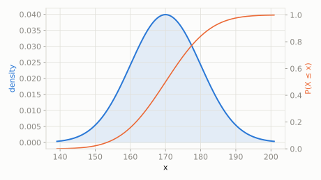

Heights of all the 10-year-olds in a big school average around 170 cm, with a standard spread of 10 cm -- most kids are close to average, very few are extremely short or extremely tall.
What fraction of kids are taller than 185 cm?
scipy.stats.norm
The famous bell curve: values cluster near the mean and get rarer the further out you go, symmetrically in both directions. It shows up everywhere because of the Central Limit Theorem -- add up enough small, independent effects (genetics, measurement noise, coin flips) and the sum starts looking Normal, no matter what the individual pieces looked like.
| parameter | default used here | meaning |
|---|---|---|
loc | 170 | mean (center of the bell curve) |
scale | 10 | standard deviation (spread) |
Heights of all the 10-year-olds in a big school average around 170 cm, with a standard spread of 10 cm -- most kids are close to average, very few are extremely short or extremely tall.
What fraction of kids are taller than 185 cm?
scipy.statsimport scipy.stats as stats
import numpy as np
dist = stats.norm(loc=170, scale=10)
print('P(height > 185cm):', round(dist.sf(185), 4))